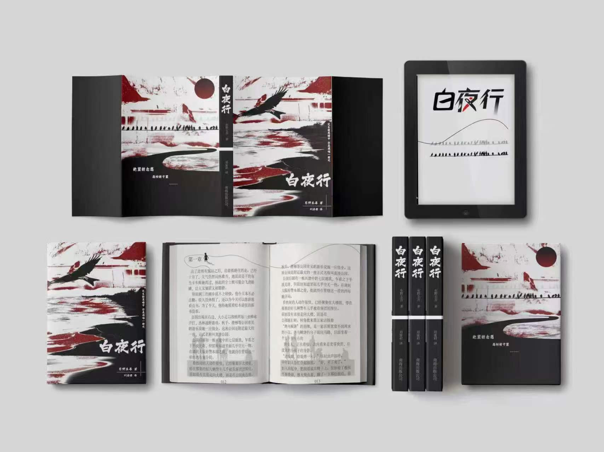
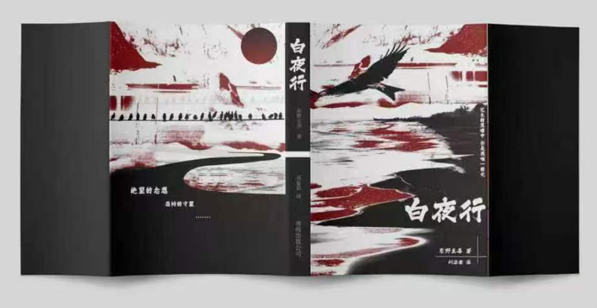
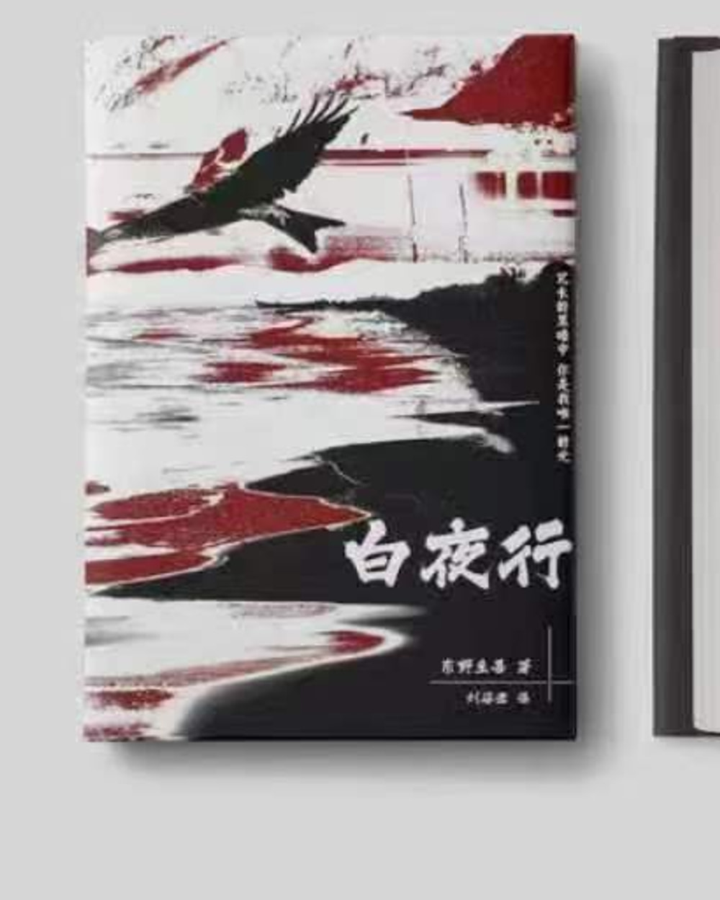
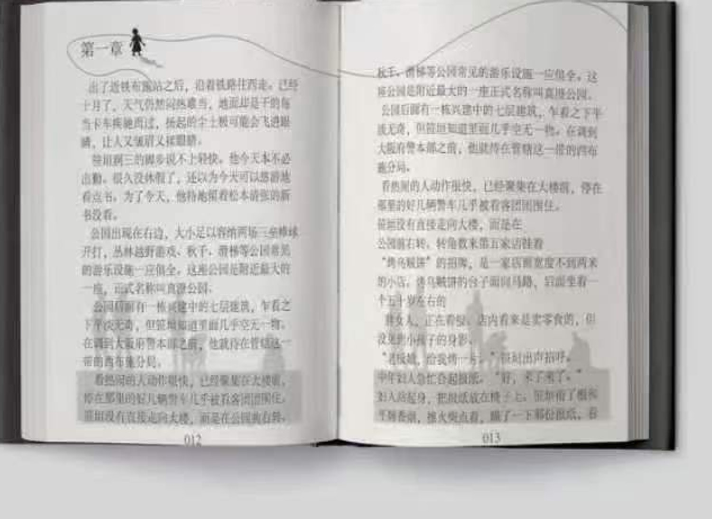
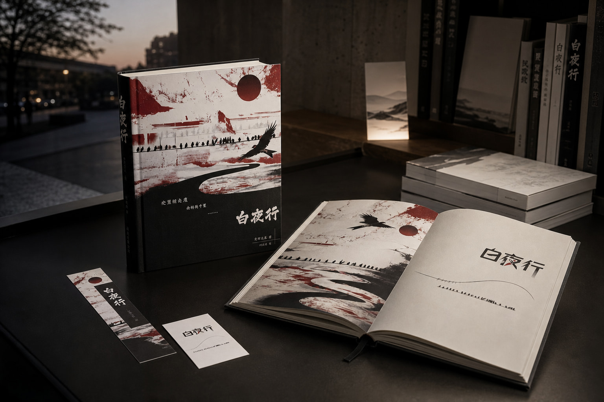
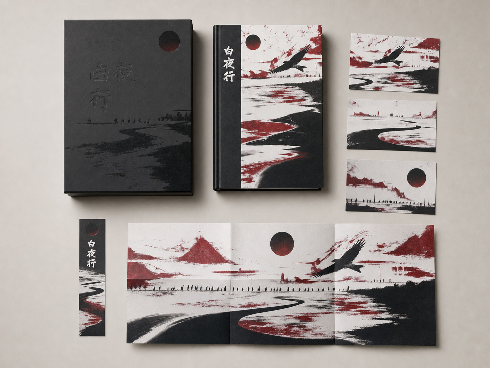

书籍设计 · 自主项目
白夜行
白昼、黑夜和一轮红日，讲一段无法直视的关系。
概念、主视觉、书籍设计和延展，全程不直接画人物。
红日、飞鸟、地平线和一条黑色小路，贯穿封面、内页、书签和海报。

问题
不用人物形象，故事怎么被记住？
我们不画人物肖像，而是把两人的关系和命运提炼成可以反复使用的符号。
黑白拉开距离，暗红标出情绪的重点，人物只以剪影出现在地平线上。
思路
四个符号
红日、黑鸟、地平线和小路，分别代表真相、自由、等待和联结。
红日真相、凝视
↗黑鸟自由、逃离
••••••••地平线时间、群像
小路命运、共存



一张图，多个面
护封展开是一整张横向的画，折起来后封面、书脊和封底又各自成立。
内页少用红色，电子版只保留书名和地平线。
深空黑#0C0C0D
暖纸白#E9E7E1
日食红#7B1E24
剪影 / 张力 / 距离 / 共存

拿在手里，放在桌上
效果图展示这本书拿在手里、放在桌上的样子，用来检查纸张、书脊辨识度和陈列效果。
收藏版
函套、明信片和书签沿用同样的图形比例和裁切。
这一组是概念延展，没有实际制作。

成果
一个故事，
一套视觉语法。
同一组符号和用色规则，贯穿护封、内页、电子版和收藏版。
查看全部作品 ↗